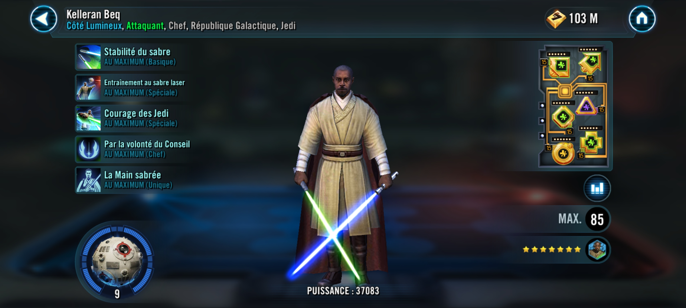

Kelleran Beq
Known as the Sabered Hand for his lightsaber mastery, Kelleran Beq used his Force knowledge to mentor younglings and rescued Grogu during Order 66
Known as the Sabered Hand for his lightsaber mastery, Kelleran Beq used his Force knowledge to mentor younglings and rescued Grogu during Order 66

Deal Physical damage to target enemy and grant Foresight to a random ally who doesn't already have it for 2 turns. If it is Kelleran Beq's turn, attack again.
Deal Physical damage to target enemy. All allies gain Offense Up for 2 turns. Call all Galactic Republic Jedi allies to assist. If there are no allied Galactic Legends, allies recover Health and Protection equal to 50% of the damage dealt until the end of the turn, otherwise they recover Health and Protection equal to 5% of the damage dealt until the end of the turn.
Dispel all debuffs on all allies. Deal Physical damage to target enemy and deal additional True damage equal to 20% of Kelleran Beq's Max Protection.
Galactic Republic Jedi allies have +50% Defense and Tenacity and +30 Speed.
At the start of battle, all other Galactic Republic Jedi allies gain stacks of Padawan Lessons equal to the number of stacks on Kelleran Beq for the rest of battle.
All Jedi allies gain Foresight for 2 turns at the start of each encounter.
Omicron Boost : While in Territory Wars and there are no Galactic Legends and all allies are Galactic Republic Jedi: At the start of battle allies gain additional 5% Offense for each stack of Padawan Lessons on them, doubled while they have Foresight.
Whenever an ally with Protection uses an ability on their turn, call another random ally to assist.
The first time each ally loses all Protection, they recover 50% Turn Meter, gain 150% Bonus Protection for 3 turns, and gain 10% Critical Chance, Critical Damage, and Offense plus an additional +2% for each stack of Padawan Lessons on them.
While Kelleran is active, allies have +500% Defense. While another ally has Protection, Kelleran can't be defeated.
If all allies are Galactic Republic Jedi, Kelleran Beq loses 40% Max Health and gains double that as Max Protection.
For every 10,000 Protection Kelleran Beq has at the start of battle, he gains a stack of Padawan Lessons for the rest of battle (max 100).
While Kelleran Beq has Protection, he has 100% counter chance, a 50% chance to attack again whenever he uses a basic ability, and can't drop below 100% Health.
If there are no allied Galactic Legends:
- Whenever a Galactic Republic Jedi ally is inflicted with Healing Immunity, they gain Protection Up (40%) and Tenacity Up for 1 turn
- Whenever a Galactic Republic Jedi ally is inflicted with Target Lock, they recover 20% Health and Protection and +10% Turn Meter
If Kelleran Beq is in the Leader slot and not the ally slot, while his Max Health is greater than 1, the first time he would be defeated he instead recovers 100% Health and Protection and gains a bonus turn. Otherwise, if the allied Leader is a Galactic Republic Jedi and not a Galactic Legend at the start of the battle, they gain Second Wind for the rest of the battle, which can't be copied, dispelled, or prevented.
Padawan Lessons: +20 Defense Penetration and +5% Offense per stack